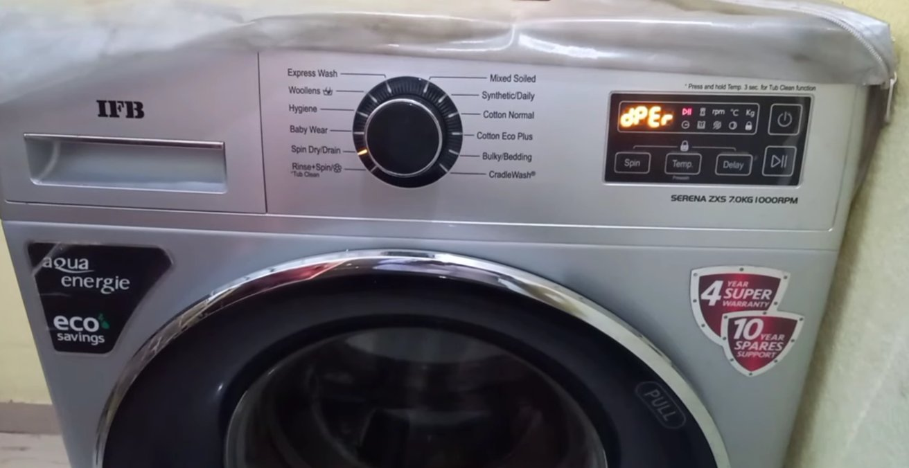
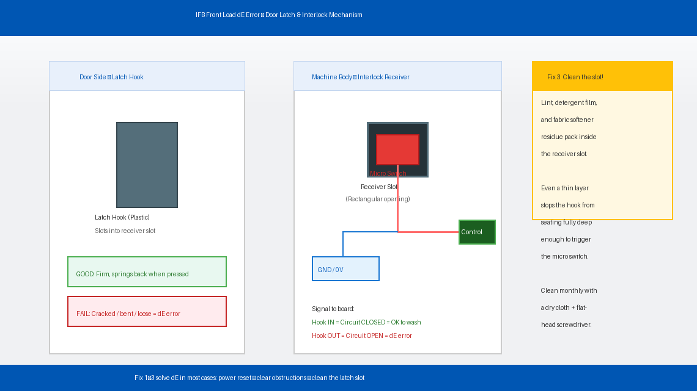
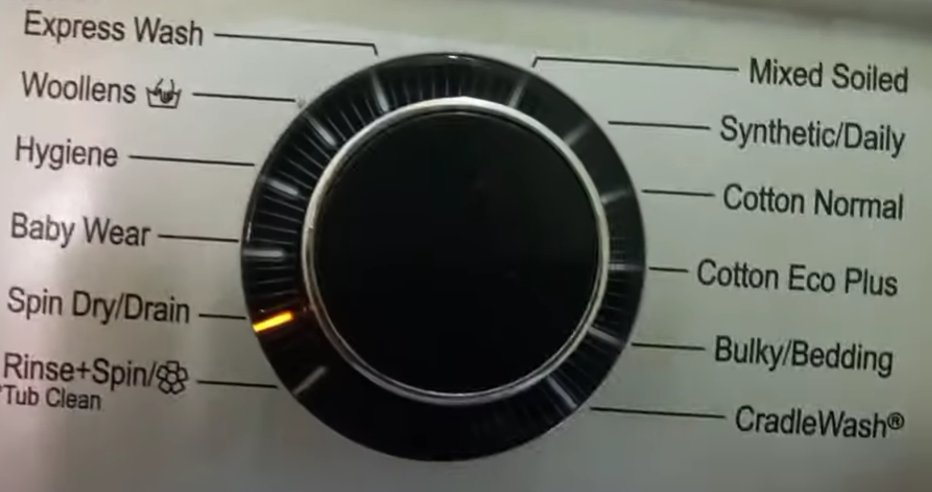
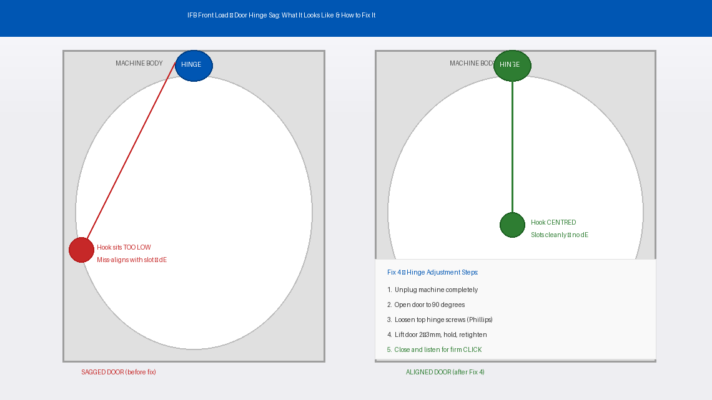
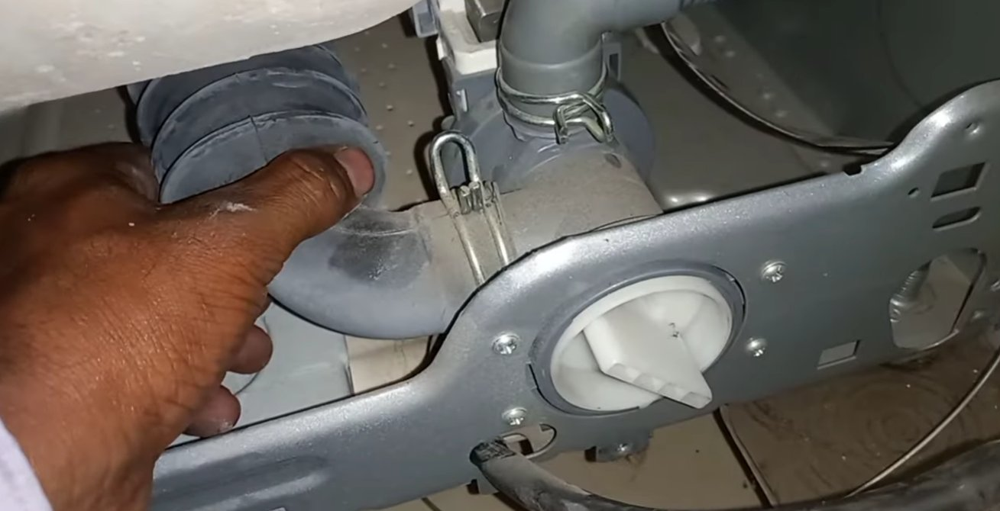
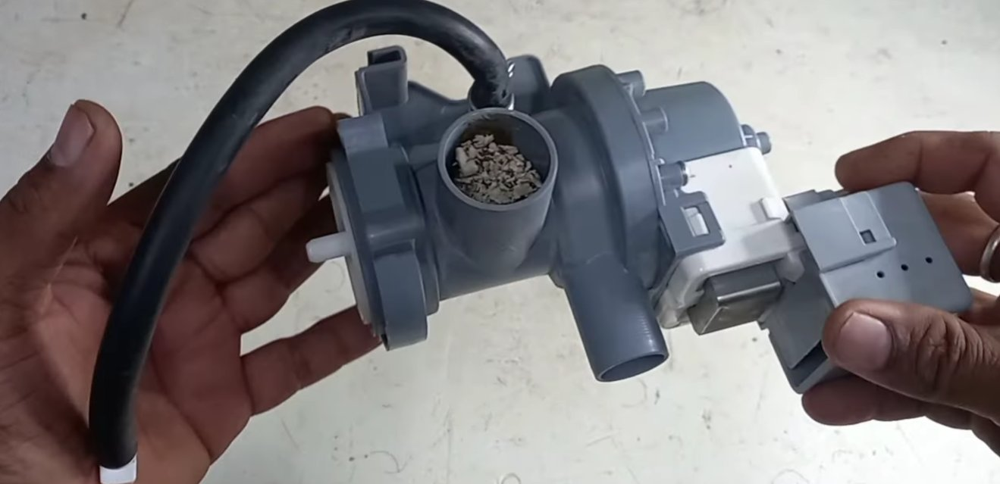

You’ve Loaded the Machine. Set the Cycle. And Now: dE.
There’s nothing quite as infuriating as loading up your IFB front load washing machine — sorting the clothes, measuring the detergent, setting the cycle — and then watching the display flash dE at you the moment you press Start. The drum doesn’t move. The machine doesn’t fill. Nothing happens except two small letters sitting on the display, completely unmoved by your frustration.
You close the door harder. Still dE. You open it, shut it, and press Start again. Same result. You try a different cycle. Nothing.
The good news is that dE is one of the most common IFB error codes — and it is almost never a sign that your washing machine is seriously damaged. In the vast majority of cases, it’s a latch that needs cleaning, a hinge that needs adjusting, or a sensor that needs resetting. Most people clear this error themselves in under twenty minutes without calling a single technician.
This guide explains exactly what’s causing the dE error on your IFB washing machine and walks you through every fix — starting from the easiest and working toward the more involved solutions only if needed.
What Does the ‘dE’ Error Mean?
In plain English, dE stands for Door Error — it means your IFB washing machine’s control board believes the door is not safely closed and locked, even if it looks shut from the outside.
IFB front load machines use a component called a door interlock switch (also called a door latch assembly). When you close the door, a plastic hook slots into this interlock. The interlock then sends an electrical signal to the control board confirming: “Door is closed. Locked. Safe to begin.”
The control board will not start any wash cycle — not fill, not spin, not heat — until it receives that confirmation signal. This is a deliberate safety feature to prevent the drum from spinning with an unlocked door, which could cause serious injury or flood your floor.
The dE error appears when that confirmation signal is missing, weak, or delayed. The four most common reasons:
- The door latch or interlock mechanism is worn, dirty, or slightly misaligned — the hook isn’t engaging deeply enough to trigger the signal
- The door hinge has sagged over time from heavy wash loads, causing the hook to no longer align with the receiver slot
- The door seal (rubber gasket) is bulging outward — laundry trapped behind it physically prevents the door from closing completely
- The door interlock’s wiring has come loose or the interlock itself has failed electrically

Tools You’ll Need
You likely won’t need any tools for the first few fixes. Here’s the full list in case you need to go further:
- A clean dry cloth
- A flathead screwdriver and a Phillips head screwdriver
- A small torch or flashlight
- A multimeter (optional — only needed for Fix 5, testing the interlock electrically)
- Needle-nose pliers (optional — for reseating wiring connectors)
- About 15–30 minutes of your time
Step-by-Step Fixes (Easiest to Hardest)
Work through these in order. The dE error is fixed at Fix 1 or Fix 2 for the majority of IFB users — only continue further if the error persists.
Before anything else, give the machine a clean reset. A control board glitch caused by a power fluctuation or an incomplete previous cycle can lock the machine into a dE state even when the door is perfectly fine.
- Press the Power button to turn the machine off.
- Unplug the washing machine directly from the wall socket — do not just leave it on standby.
- Wait a full 3 minutes. This is longer than most people wait, but it’s long enough for the control board to fully discharge and clear any stuck error state.
- Plug the machine back in and power it on.
- Without opening the door, press Start and observe whether dE reappears.
If the machine starts filling normally, a temporary board glitch was the entire problem. If dE returns immediately, move on.
The single most overlooked cause of a persistent dE error is something physical preventing the door from closing that extra millimetre needed to fully engage the latch. A sock caught in the seal, a slightly overstuffed load, or foam residue can all be enough.
- Open the door fully and look at the rubber door gasket — the thick rubber ring sealing the door to the drum. Run your fingers around the entire inner fold of the gasket.
- Check for any clothing, a sock, or debris caught between the gasket and the drum. Even a thin piece of fabric in the fold can prevent the door from seating flush.
- Check the drum load. If the machine is stuffed full, pull out two or three items. Front load machines need approximately 10–15% empty space for the door to close cleanly.
- Inspect the door latch hook — the plastic or metal tongue on the door. Look for cracks, bending, or chips. Press it gently — it should spring back firmly. If it moves loosely or doesn’t spring back, it is worn.
- Check the latch receiver slot on the machine body for lint, detergent residue, or debris blocking it.
- Close the door slowly and listen for a firm, audible click. If you don’t hear that click, the latch is not fully engaging.

Lint, detergent buildup, and fabric softener residue accumulate inside the latch receiver over time and can prevent the door hook from seating deeply enough to trigger the interlock switch. This is extremely common in machines that are 2–3 years old.
- Unplug the machine completely.
- Open the door and locate the latch receiver slot on the front of the machine body — the rectangular or D-shaped slot the door hook clicks into.
- Use a dry cloth to wipe out the receiver slot thoroughly. Use a flathead screwdriver wrapped in cloth to reach into the slot and clear any compacted residue.
- Dampen a cloth very lightly with clean water and wipe the receiver again. Do not use any liquid directly inside the slot — moisture inside the interlock mechanism can cause the switch to short.
- Clean the door latch hook on the door in the same way.
- Wipe down the inner edge of the door and the rim of the drum opening — detergent film here can affect the door’s ability to close fully flush.
- Allow everything to dry for 5 minutes, then plug in and test.

Front load washing machine doors are heavy, and over time the door hinge can develop slight sag from repeated opening and closing under load. When the door sags even 2–3mm, the latch hook no longer aligns perfectly with the receiver slot, and the interlock switch never fully triggers.
- Unplug the machine.
- Open the door to about 90 degrees and look at the top hinge where the door connects to the machine body.
- Using your Phillips screwdriver, slightly loosen — do not fully remove — the hinge screws.
- With your free hand supporting the door, gently lift it upward by a millimetre or two and hold it in this slightly raised position.
- Retighten the hinge screws firmly while holding the door in the raised position.
- Close the door slowly. The latch hook should now align more centrally with the receiver slot.
- Listen for a clean, firm click. If you hear it clearly now but didn’t before, the hinge sag was the cause.
- Plug in and run a test cycle.

If the door closes with a firm click, the latch looks physically intact, and the machine still shows dE — the door interlock switch itself may have failed electrically. The interlock is triggering mechanically but the signal it sends to the control board is dead.
- Unplug the machine and wait 5 minutes.
- To access the door interlock, peel back the front edge of the rubber door gasket. Starting at the top, carefully pull the outer lip inward — it’s held by a spring wire retaining band you can work loose with a flathead screwdriver.
- Once the gasket lip is pulled back, remove the front panel retaining screws near the top corners with a Phillips screwdriver.
- Tilt the front panel forward slightly to reveal the door interlock mounted behind the latch receiver slot.
- Locate the wiring connector plugged into the interlock. Unplug it and inspect the terminals for corrosion (green or white powdery residue) or bent pins. Reconnect firmly — a partially seated connector is enough to break the circuit.
- If you have a multimeter, set it to continuity mode and test across the interlock terminals with the door hook manually engaged. A functioning interlock shows continuity when the hook is engaged and no continuity when released. If it shows the same reading in both states, the switch has failed and needs replacement.
- IFB door interlock switches are available from IFB service centres and parts retailers for approximately ₹400–₹900 depending on the model. It’s a plug-and-remove replacement — no soldering required.


The safest “bypass” available to a home user is not a wiring bypass — it is using IFB’s built-in manual override that some models support:
- Make sure the machine is in a paused state (not mid-error).
- Hold the door firmly pressed shut by hand.
- On some IFB models, simultaneously pressing and holding the Temp and Spin buttons together for 5 seconds activates a manual start override that bypasses the door sensor check for a single cycle.
- This is model-specific — check your user manual or the IFB support page for your exact model number before attempting.
For any actual wiring bypass, contact an IFB-authorised service technician. It is not something that should be improvised at home.
When to Call a Professional
The dE error is one of the more DIY-friendly IFB fault codes, but there are situations where stopping and calling a technician is the right decision:
- The door latch hook is visibly cracked or broken. A broken latch hook cannot be repaired — it needs replacement (₹300–₹700 for the part plus labour). A quick and inexpensive fix for a technician.
- The door interlock fails the multimeter test (Fix 5). If you’re not comfortable with the wiring access, an IFB technician will have it done in 20 minutes.
- dE appears alongside other error codes — combinations like dE + E3 or dE + UE suggest a control board issue rather than a purely mechanical door problem.
- The machine shows dE intermittently — works for a few cycles, then fails randomly. Intermittent faults are almost always a wiring or connector issue that requires a technician to trace with the machine running.
- Your machine is under warranty. IFB offers a 2-year comprehensive warranty and a 5-year motor warranty on most front load models. Do not open the machine during the warranty period — contact IFB service directly so the repair is covered at no cost.
To reach IFB support: visit ifbappliances.com/service or call 1860-425-5678 (India toll-free, Monday to Saturday). Keep your model number and purchase invoice handy — both are required to book a warranty service call.
Quick Summary
| Fix | Difficulty | Time Needed |
|---|---|---|
| Hard power reset (unplug for 3 minutes) | Very Easy | 3 minutes |
| Check door, gasket, and latch for obstructions | Very Easy | 5 minutes |
| Clean door latch and interlock receiver | Easy | 10 minutes |
| Adjust door hinge alignment | Moderate | 15 minutes |
| Inspect and reseat interlock wiring / test electrically | Moderate | 20–30 minutes |
Start at the top and work your way down. Nine times out of ten, a dE error on an IFB front load machine is a trapped sock, a packed drum, or a latch receiver clogged with detergent residue — all of which cost nothing to fix and take less time than waiting on hold with a service centre.
Fixed your IFB with one of these steps? Fix 3 (cleaning the latch receiver) is the one that surprises most people — it looks spotless until you get a cloth in there and find years of detergent film. Make it part of your monthly machine cleaning routine and dE will become a much rarer visitor.